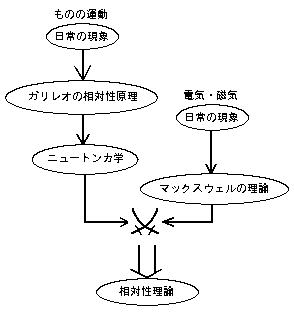

最終更新日 2000年2月1日
ここでは特殊、一般、と２つある相対論のうちの簡単な方、
特殊相対性理論についての、ちょっとしたウソやインチキも交えながらの解説です。
これで納得できれば良し、納得できない場合はちゃんとした本でも読んで下さい。
というわけで、その２、はじまりはじまりー。
「ガリレオの相対性原理」は、ちょっと見た感じでは、それほど変な主張とは 思えないでしょう？ なんでかというと、ニュートンはガリレオの相対性原理を元に 運動の法則を作りました。中学や高校で習う理科（の力学の部分）は ニュートンの理論です。だから、そういうことには慣れているのです。 ニュートンの考えた法則は、それまでに知られていたいろいろな現象 （これは我々が日常に見聞きするようなレベルの現象です）を説明するための ものです。「慣性の法則」、つまり走っているものは何もしなければ走り続ける （これが相対性原理のモトみたいなものです）とか、「万有引力」、モノは重さに 応じて互いに引き付け合う、とかいうヤツです。 「慣性の法則」はスケートやスペースシャトルの中継なんかで、 ものをちょっと押したら、そのままずーっと進んでいくという映像を見ているから 違和感がありません。だから、日常の現象を説明する理論が我々の感覚と 一致しないということはかえって妙です。ただそれを“すべての現象”にまで 拡大すると、意外な結果をもたらすのです。
アインシュタインはニュートンの理論を、アインシュタインの時代に知られていた 現象全てを説明する理論に拡張しただけのことです。 その違いは、ニュートンの時代とアインシュタインの時代の間に、マックスウェルという 人が電磁気の法則を作ったことにあります。ニュートンの時代には、 電気や磁気（磁石の力）はあることはわかっていましたが、 まだその理論は完成していませんでした。19世紀になって、マックスウェルが 電気の力と磁気の力が１セットの法則で表わされるということを証明しました。 これは実験でも確かめられているので、アインシュタインの時代にはどうしても 取り込まなければならない理論の一つだったのです。もし、ニュートンが200年後に 生まれていたら、きっとアインシュタインと同じ理論を作ったことでしょう （うーん、ほんまかいな？ どうかなあ）。
さて、電気と磁気の法則から導かれる現象の一つに電波があります。 電波の正式名称は「電磁波」で、電気と磁気の波です（そのまんまやんけ）。 電線に電気を流したり、磁石を動かしたりすると、電波が出てきます。 で、電波の速さは、この電気と磁気の法則で決まっています。すると、 （当時の人が）驚くことに、それまでに測られていた光の速さと同じでした。 うーむ、なぜなんだろう。
実は、光（レーザー光線も）は電波の一種です。えぇーっと思いますか？ でも本当です。電磁波の説明はこんな感じです。 同じモノなので当然速さも同じです。 ところが、光（電波も）の速さは真空中が一番速くて、水とかガラスの中は 遅くなります。光が屈折するのはこのためです（屈折には他にもいろいろな説明の 仕方があります）。光の速さが変わるのは、水やガラスの電気や磁気の通し方（性質）が 違うので、結果としてそうなるわけです（他の物質も同じ）。 もうちょっと詳しい説明はこんな感じ。 問題は真空の場合です。真空には物質が何もないので、光がなぜその速さで 走るかという説明は、それが真空の性質だ、という以外しようがありません。 中には、もしかしたら真空より光の速度が速くなる物質があるでのは、と思う人が いるかもしれません。ない！と断言はできませんが、下の“詳しい説明”を読むと 何となくなさそうな感じがするでしょう。
さて、この電磁気の法則から電波があることがわかって、その一種が光だと わかると、問題が出てきます。電磁気の法則が正しくて（それは実験で確かめられて いました）、しかもガリレオの相対性原理も正しいとすると、地上でも電車の中でも 宇宙船の中でも、実験すると電磁気の法則通りの結果が得られないといけません。 実際そうでした。実験は地上でしますが、地球の東西反対向きでは、 自転（秒速500m）や公転（秒速30km）の分だけ速さが違います。 結構速いでしょう。これくらいの速度ならもちろん実験で判別できます。 光の速さは地上のどこでどの向きに測っても同じでした。だからガリレオの 相対性原理とマックスウェルの電磁気の法則はベストマッチだったわけです。 では問題は何でしょうか？ それはニュートンの理論（力学）です。 ニュートンの理論ではものの速さは足し算、引き算ができます。 確かにそうです。時速100kmの自動車の横を同じ時速100kmで走れば止まっている （100-100=0km）ように見えるし、反対向きに走れば時速200kmで向かってくるように 見えます。ではなぜ光の速さはいつも同じなんでしょう？ なぜ光（電磁波）だけ速さの足し算ができないのか？
 問題点を突き詰めると、「ニュートンの理論とマックスウェルの理論が 食い違っている」ということになるわけです。つまり
ところが相対性理論が正しいとすると、（当時の考えからは）常識外れのいろんな ことが予言されます。
電波は波の長さ（波長）が違うと、性質も変わってきます。例えば、ラジオの電波と テレビの電波は波長が違います。テレビの方が波長が短い波です。 この違いだけで、電波の届く範囲が変わってきます。夜になると 日本のたいていの所では東京のラジオを聞くことができますが、東京のテレビは 東京近辺でないと見られません。テレビは高いビルの陰になったりすると、見えなく なることもあります。つまり、波長が短くなるとまっすぐ進む性質（直進性）が 強くなります。電波の波長をもっと短くするとマイクロ波になります。 これは電子レンジに使われている電波です。電波は金属で遮断されてしまう（ビルの中に入るとラジオや携帯電話が聞こえなくなる）ので、缶詰めは そのままでは暖められません。だから、器に移せと書いてあるでしょ。 （実験してみたい人は、以下のようにできますが、事故が起きるかもしれないので 私は責任は負いませんよ。まず、水の入ったコップを２つ用意します。片方は アルミホイルで、片方はサランラップで包みます。一緒に電子レンジに入れて 30秒ぐらい暖めてみましょう。アルミホイルで包んだ方は冷たいままです。） このようにマイクロ波はモノを暖められます。暖めると言えば赤外線。 ほーら、あなたはだんだん電波と赤外線が仲間のような気がしてくる。 赤外線と光（可視光線）と紫外線はみんな太陽からやってくる光の仲間だ、というのは 理科で習ったでしょう。というわけで、電波と光は仲間、というのもそれらしい （ついでに、もっと波長が短くなるとＸ（エックス）線、γ（ガンマ）線と なります）。
電波が金属の中を通らないのは、金属の中では電子が（これくらいは知ってますよね。 物質は原子から、原子は原子核と電子からできています）自由に動けるので、電波の エネルギーをもらってそのまま走り出してしまうからです。 （電子が動けるから電気が流れるわけです。理科でプラス極からマイナス極へ電流が 流れるのはマイナスの電気を持つ電子が“逆向きに”流れるからだ、と習ったでしょ？） 金属以外の物質でも、光を通す（つまり透明な）ものと通さないものがあります。 この違いも上とだいたい同じで、物質中の電子が光のエネルギーを吸収してしまう （普通は熱になってしまいます）性質を持っていると、その物質は不透明です。 光をうまく受け取れない性質の電子ばかりでできている 物質が透明になります。ただし、透明な物質の中を 光（電波）が通る時は、そのまますり抜けていくのではなく、電子 に一度吸収されます。けれど、物質の中の電子は原子核の周りにとらわれているので、 自由にエネルギーをもらったりできなくて、すぐに再放出されます。放出された光は 他の光と一緒に飛んでいきますが、 何もない場合に比べて手間がかかるので少し遅れます。こういうことが次々と 起こるので、全体としても光は遅くなるというわけです。 ちょっとインチキくさいかな？
うまい解決策有名なのがローレンツの「エーテル」というヤツです。エーテルは目にも見えないし、 あることも感じられませんが、なぜか、地球（人間も）のような物体がエーテルの 中を動くと（ちょうと風圧を受けるように）その方向に圧縮される、という考えです。 エーテルによる圧縮はあらゆる物質に共通に働くので、どれくらい圧縮されるかは まったく計測できません（長さを測ろうとものさしを当てても、ものさしも 圧縮されてしまう）。つまり、光の速さの違いを説明するためだけにあるような ものです。そんなー、インチキ、と誰もが思うでしょ。そゆこと。 なお、この圧縮率の計算は、「ローレンツ変換」という名前で相対性理論に 受け継がれています。